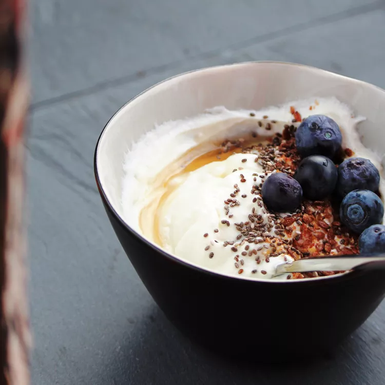

Greek Yogurt

Greek Yogurt Ingredients
Ingredients
- Coffee filters
- 1 (32 ounce) container plain yogurt
Steps
- Line a colander with coffee filters and set it in a large bowl. Add yogurt and cover with a clean kitchen towel. Place in the refrigerator for 6 hours to overnight; the fluid from the yogurt will collect in the bottom of the bowl.
- Scoop yogurt out of the coffee filters and back into the original container for storage. Discard accumulated fluid or reserve for other use.
Home Page